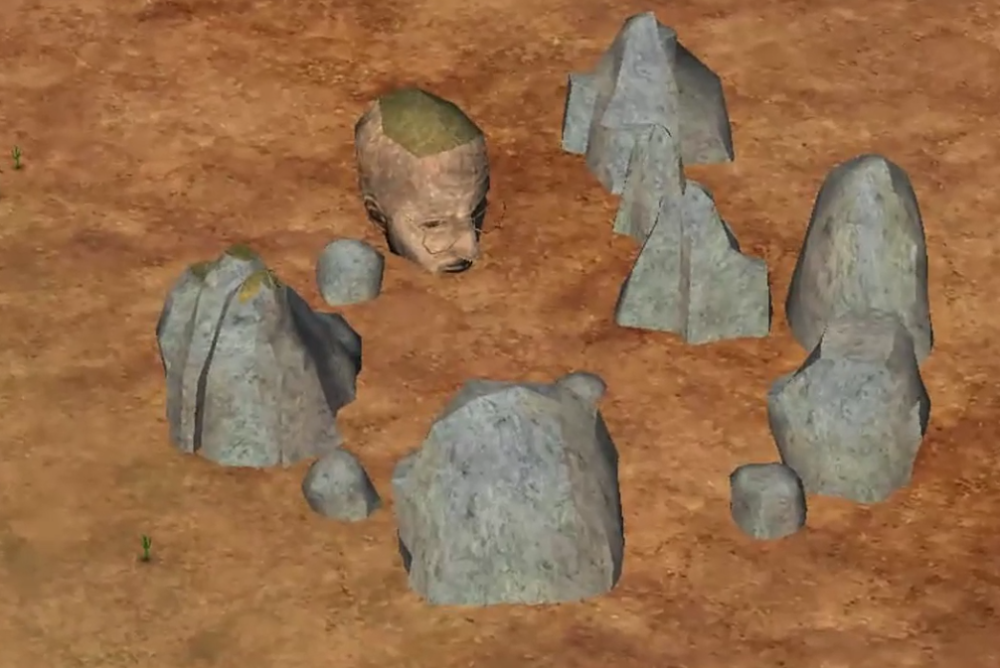
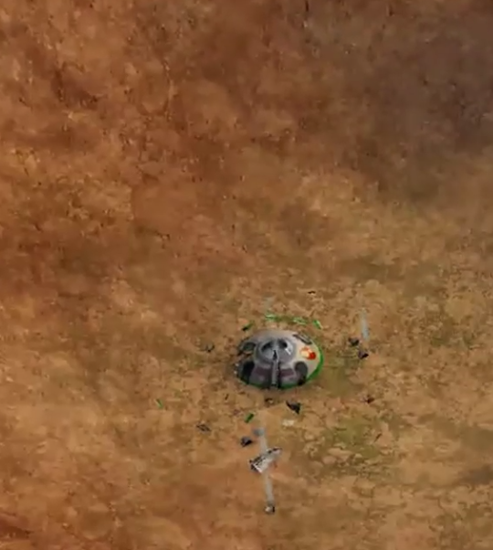

| Welcome to Strangetown | |||
|---|---|---|---|
| Case Files: | Enter the strange... | ||
| Strangetown | Located in a remote desert region, Strangetown is characterized by its stark yet mesmerizing landscape—a canvas of rolling sand dunes, sparse vegetation, and a vast, cloudless sky that stretches endlessly overhead. The town itself is modest in size, with quaint homes and businesses scattered across its sandy expanse, each contributing to the town's unique charm and enigmatic atmosphere. | ||
| Curious | |||
| Smith | |||
| Beaker | |||
| Specter | |||
|
|
|||
|
As day fades into night over Strangetown, the desert skies become a canvas for celestial wonders, casting a mystical glow over the town and its inhabitants. Local legends whisper of hidden treasures buried beneath the shifting sands and ancient mysteries waiting to be unearthed by those bold enough to explore. Whether you're drawn to the scientific intrigue, the paranormal phenomena, or the quiet whispers of local folklore, Strangetown beckons with its blend of natural beauty, supernatural allure, and the untold stories that linger just beneath the surface of this captivating desert community. |
 | ||
|
In the heart of Strangetown's desert landscape lies a peculiar and enduring mystery—the crashed UFO. This extraterrestrial artifact, nestled amidst the sandy dunes, serves as a tangible reminder of the town's connection to the unknown and the unexplained. The wreckage, with its twisted metal and otherworldly design, stands as a testament to a moment frozen in time—a moment when the boundaries between Earth and the cosmos briefly blurred. Local legends and whispered tales abound regarding the origins of the crashed UFO. Some speculate it was the result of a failed extraterrestrial experiment gone awry, while others whisper of a cosmic collision that brought the vessel hurtling through the atmosphere and into Strangetown's backyard. Its presence fuels speculation about the existence of alien life forms, their motives for visiting Earth, and the potential implications for humanity's understanding of the universe. Yet, amidst the awe-inspiring sight of the UFO's wreckage, there is also a sense of caution—a reminder that not all mysteries are meant to be solved, and some truths may forever remain beyond the grasp of mortal minds. |
 | Back to top | © Emily Hubers 2024 | Powered by ChatGPT |